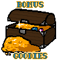

A daring adventure of pirates, booze and a whole lotta booty!
A motley crew of outcasts become fugitives as they sail across the seas and skies of a strange alien planet, searching for the fabled treasure of Alternia's most infamous Pirate.
Will they have the glory of grand pirate booty? Or will the Empire's bounty hunter cut them down in their prime and claim the treasure for their own?
==============================================================
Rated 15+ Due to violence, coarse language, drug references, nudity, adult themes and sexual references.
Epilepsy warning.
Some commands are user suggested.
==============================================================